How to Use Nexora
Step-by-step visual guide.
Installation
System Requirements
- 64-bit OS: Windows 10/11 or macOS 11+
- CPU: Intel/AMD x64 or Apple silicon
- RAM: 4 GB+ (8 GB recommended)
- 64-bit DAW supporting Nexora format (VST3 / AU / AAX if applicable)
Windows (VST3)
- Download and run the installer.
- Close your DAW before installing.
- VST3:
C:\Program Files\Common Files\VST3\Nexora.vst3 - Open your DAW, rescan plugins, and insert Nexora on an audio track or bus.
macOS (VST3 / AU)
- Download the .pkg and run it.
- Close your DAW before installing.
- VST3:
/Library/Audio/Plug-Ins/VST3/Nexora.vst3 - AU:
/Library/Audio/Plug-Ins/Components/Nexora.component - If blocked, open via right-click → Open or allow under Privacy & Security.
Activation
Open Nexora, open the Main Menu , select Activate, then enter your license key.
Troubleshooting
- Rescan plugins from your DAW preferences.
- Confirm you installed the correct format for your DAW.
- Verify 64-bit mode and plugin folder paths.
- On macOS, check Privacy & Security if blocked.
Top Bar
Rec 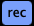
Shows/hides the Recorder view at the bottom.
Color Dot
Opens the global color palette for the plugin theme and all tracks. Track-specific color is set from the track itself.
Random (Dice)
Randomizes the entire plugin based on the current Random Config settings.
Playback Mode
Selects the playback mode (Parallel, Sequential, Random Step, Random Track, Selected Track, Mixdown, etc.).
Jump Step 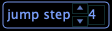
Applies only to Random Step mode.
Save / Save As 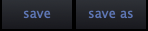
Saves the current state or saves as a new preset.
Preset Name + Arrows 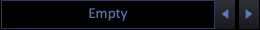
Shows the current preset name and steps through presets.
Menu Button
Opens the Main Menu.
Tracks 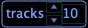
Sets the number of active tracks (1–10).
Div / Beat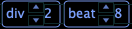
Grid setup: Division and number of Beats.
Second Row Buttons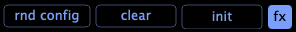
- RND CONFIG: opens the Random Config panel.
- CLEAR: clears the grid patterns.
- INIT: resets everything (including the grid), like loading a clean init preset.
- FX: shows/hides the Master FX Rack.
Master Snapshot (automatable)
Selects the active Master Snapshot. Master snapshot switching is controlled via the Master Snapshot control.
Track Selection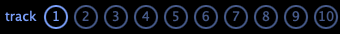 (automatable)
Selects the current track (mainly used for Selected Track playback mode). Right-click a track number to toggle that track’s FX Rack. If a non-master rack is currently shown, selecting a track makes it the active track.
Master PAN / MIX / GAIN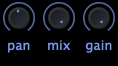 (automatable)
PAN sets stereo processing focus. It does not mute a side; it controls how much processing is applied per channel. MIX is master mix. GAIN is master gain.
Core Concepts
Tracks
Each track is a separate FX lane. Tracks can be reordered and played differently depending on Playback Mode.
Grid Patterns
The grid is your performance timeline. Patterns trigger actions and recall snapshots in sync with the host.
Snapshots
Snapshots store parameter states per effect. Patterns can recall snapshots so one sequence can produce many different sounds without drawing automation.
Master FX Rack & Master Snapshots
Nexora also includes a Master FX Rack. You can edit Master snapshots the same way as track snapshots, but Master snapshot switching is performed via the Master Snapshot control.
Switch Master snapshots by clicking a Master snapshot or by dragging to move between snapshots. This lets you perform instant global transitions and reshape the entire FX structure in real time.
Playback Modes
Parallel: All active tracks run together for layered glitch textures.
Sequential: Tracks play one after another for evolving builds and fills.
Random Step: Randomly chooses steps for unpredictable movement (Jump Step).
Random Track: Randomly chooses which track is triggered/featured.
Selected Track: Only the selected track responds (focused sound design).
Mixdown: Uses Nexora as a unified performance engine for macro transitions.

Track Controls
Reordering Tracks
Each track has a two-bar drag handle. Drag up/down to change track order. Track order matters for modes like Parallel, Sequential, and more.
FX Button
Click FX to open the FX Rack for that track. Click it again to close.
You can also open/close the track FX Rack from the Select Track control: right-click the selected track to toggle the rack.
Track Name Souece (3 modes)
Select the track name mode from the track Menu:
- Custom Name: user editable name.
- From First Effect Name: shows the first effect in the track rack.
- From Last Effect Name: shows the last effect in the track rack.
Mute / Solo
- M: mutes the effects output of that track.
- S: solos that track (audible when it is being processed).
- Hold Ctrl to select multiple solo tracks.
Track Color
Click the color dot to open the palette and set the track color.
Lock / Random / Clear (Track)
- Lock: locks the track grid for Randomization (see Randomization & Locks).
- Random: randomizes only the track grid patterns and their snapshot assignments.
- CLR: clears all patterns on that track.
Drawing & Editing Patterns
Create, Move, Resize
- Create: Click once on the grid to place a pattern. You can keep the mouse button pressed and drag to define the initial length in one gesture.
- Resize: After a pattern is created, drag its right edge to stretch or shrink the length.
- Move: Click and drag the pattern left/right to reposition it on the timeline.
- Delete: Double-click a pattern to remove it.
Change a Pattern’s Snapshot
Hover a pattern and drag the mouse up/down to change which snapshot it triggers.
Slice a Pattern
Hold Alt and click a pattern to slice/cut it into step-sized segments.
FX Rack & Snapshots
FX Rack
Each track has an FX Rack (effect chain). Build your chain and shape how the track sounds. Snapshots allow step-by-step parameter recall for evolving sequences.
Snapshots
Snapshots store multiple parameter states per effect. Grid patterns can recall snapshots so each step can have a different sound.
What You Can Do Fast
- Design multiple snapshot states for one effect.
- Assign snapshots to patterns and let the grid recall them.
- Tweak during playback and capture changes musically.
Edit Mode vs Live Recording
The FX Rack EDIT mode changes how snapshots behave and how parameter changes are captured.
Edit ON (Snapshot Editing)
- Snapshots are not driven by the grid while editing.
- Select a snapshot slot and tweak parameters.
- Your changes are stored only in the selected snapshot.
- When a track is in Edit mode and the FX Rack is not currently shown, the grid is highlighted with an Editing label. 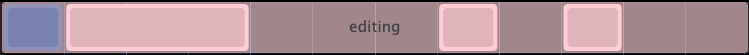
- Double-click the highlighted Editing area to exit Edit mode.
- A small e indicator 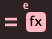 also appears above the track’s FX button. Clicking it exits Edit mode.
Edit OFF (Live Performance / Recording)
- The grid continues to recall snapshots during playback.
- Nexora runs even when the DAW is not playing, using a local internal timer.
- When the DAW is playing, timing and transport are driven by the host (DAW).
- If you tweak parameters while the sequence is running, Nexora records your changes in real time.
- The value you changed becomes part of the active snapshot state during playback.
Effects & Controls
Nexora includes a library of 20 effects. Each track supports up to 4 effects in its FX Rack.
Adding Effects
Add an effect by dragging it from the effects list (bottom panel) into the track’s FX Rack.
Effect Slot Controls
Each effect in the rack includes the following controls:
- Bypass: toggles the effect on/off.
- Lock: protects the effect from Randomization.
- Drag Handle (hamburger): drag to reorder effects.
- Remove by Drag: drag an effect to the bottom area to remove it from the rack.
- X: removes the effect from the rack.
- C: copies the parameters of the current snapshot.
- P: pastes copied parameters into the current snapshot (disabled until copied).
- Random: randomizes effect parameters (see behavior below).
- S: copies the current snapshot parameters to all snapshots of that effect.
Effect Random Behavior (All Snapshots Switch)
The effect Random button behavior depends on the rack switch All Snapshots:
- All Snapshots = ON: randomizes the effect across all 8 snapshots.
- All Snapshots = OFF: randomizes only the current snapshot.
Modifier Keys
Shift: When adjusting a parameter, hold Shift to apply the change to all snapshots of the current effect. This works with any control interaction (mouse drag, knob/slider changes, etc.).
Alt: When adjusting a parameter, hold Alt to reset it to its default value. This works with any control interaction (mouse click/drag, knob/slider changes, etc.).

Random Config
The Random Config panel lets you control exactly what Nexora is allowed to randomize: effects, rack size, snapshots, and grid content.
With FX
Enables effect randomization. When With FX is enabled, Nexora can build or modify the FX Rack according to the settings below.
Effect Selection
Choose which effects are allowed during randomization. The effect list works like a set of checkboxes: only the selected effects can be used when With FX is enabled.
Max FX in Track (1–4)
Sets the maximum number of effects per track that Random may produce. For example, if set to 4, Random can still generate 1–4 effects; this value is only an upper limit.
With FX Snapshots
Controls snapshot randomization inside effects:
- ON: Randomizes the effect across all snapshots (up to 8 snapshots per effect).
- OFF: Randomizes only the current snapshot.
With Grid Snapshots
Randomizes the snapshot assignments used by patterns on the grid (which snapshot each pattern triggers).
With Grid
Resets and randomizes the grid patterns themselves. Use this when you want Random to generate new grid content, not just new snapshot assignments.
Fill Grid
Sets how dense the randomized grid should be. Higher values create more patterns; lower values create sparser, more rhythmic space. This is an intensity/density percentage for how much of the grid is filled.
Randomization & Locks
Locking affects Randomization only. For anything other than Random, locks have no effect.
Track Lock
Locks the track grid content so Randomization will not change:
- Patterns (grid shapes)
- Snapshot assignments inside patterns
FX Rack Lock
Locks the effect chain in the rack so Randomization will not change the rack’s effects.
Effect Lock
Locks the parameters of a single effect so Randomization will not change those parameters.
- Exception: Bypass can still be randomized.
Smart Bypass Randomization
Bypass randomization is musical. If a track contains only one effect, Nexora avoids randomizing Bypass in a way that would make the whole track effectively do nothing.
Parameters Excluded from Random
Some parameters do not receive Random changes (for example Mix). You can still manually set them, store them per snapshot, and automate them — they are simply excluded from Randomization.
Automatable Control
Nexora supports host automation for key performance controls. You can record automation in your DAW and refine it in the automation lanes for precise transitions and movement.
Master Controls
- Master Pan
- Master Mix
- Master Gain
- Master Snapshot
All Tracks Controls
- All Tracks Pan – offsets the Pan value for every track (each track still has its own Pan).
- All Tracks Mix – offsets the Mix value for every track (each track still has its own Mix).
- All Tracks Gain – offsets the Gain value for every track (each track still has its own Gain).
Selected Track Controls
- Selected Track – automates track selection for focused editing and performance.
Tip: Automate Master Snapshot for fast global transitions.
Main Menu
Trial / Activation
- Activate: (Trial only) enter your license key to unlock the full version.
About & Updates
- About: version, build, and credits.
- Check for Updates: checks for a newer version and offers to download if available.
- Email My License: (Full version only) sends your license information to your email.
View & Layout
- Resize scales the plugin UI. 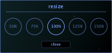
Track Options
-
Track Name Source: selects how track names are displayed (Custom / First Effect / Last
Effect).
Presets
- Init Preset: loads a clean default state.
- Load Preset: loads a preset from your library.
- Show Preset Folder: opens the preset library location.
Recorder
- Show Recorded Folder: opens the folder where recordings are saved.
Recorder
Location and View
The Recorder is located in the bottom panel. Use the REC button on the top-left of the Top Bar to show or hide the Recorder view.
While recording, the Recorder view cannot be hidden — the REC button is disabled until recording stops.
Auto Record button 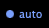
- Auto: starts recording when sound is detected (level crosses the Threshold).
- Threshold: sets the detection level (dB) that arms the recorder.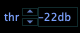
Waveform Interaction
- While playing, drag on the waveform to change the playback position and continue playing from there.
- When not playing and not recording, you can drag the recorded file out to drop it elsewhere.
Export
Click Export to save the recorded take into the Recorded Folder. You can open it from the Main Menu: Show Recorded Folder.
- Windows:
%USERPROFILE%\Documents\Nexora\Recorded - macOS:
~/Documents/Nexora/Recorded
Trial Version
Nexora can be used in Trial mode to evaluate the workflow and sound before purchasing a license.
Limitations
- No session saving (presets/projects cannot be saved in Trial).
- Session time limit: each session is limited to 20 minutes.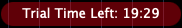
- Recorder limitation: playback includes a brief silence every 4 seconds.
Unlock Full Version
Open the Main Menu , choose Activate (Trial only), and enter your license key.